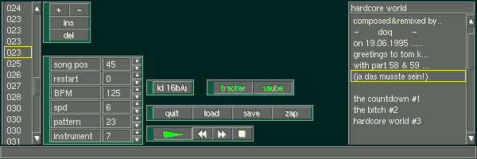

FunktrackerGOLD is a Linux Tracker that really is in Beta However feel free to try it ;-)
The OpenTracker procject is alive and well, Phil Dawes has finished writing the system kernel for his final year dissertation, OpenTracker has a working kernel, and a demonstration front end If anybody is interested in helping with the development of this project, please give him a mail.

And last but not least there is Maube tracker. maube [pronounced "MOBY"] is the first music module tracker/editor for X11. It is being developed on industry standard Linux but with driver support it will eventually work on other useful operating systems. Like all good software, maube is covered by the GNU Public License.